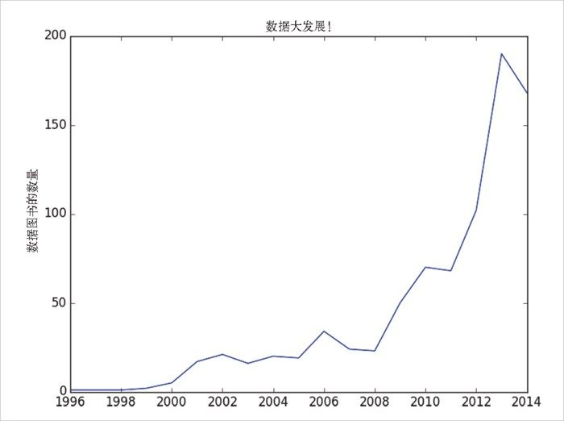

O'Reilly 是有可能改变某些网站政策的，那样会打破本小节的所有逻辑。我会尽我所能预防这种情况的发生，当然，我对 O'Reilly 并没有太大的影响力。然而，如果你们每人都发动所有认识的人买一本这书的话……
O'Reilly 是有可能改变某些网站政策的，那样会打破本小节的所有逻辑。我会尽我所能预防这种情况的发生，当然，我对 O'Reilly 并没有太大的影响力。然而，如果你们每人都发动所有认识的人买一本这书的话……9.3 网络抓取
另一种获取数据的方法是从网页抓取数据。获取一个网页十分容易，但从网页上抓取有意义的结构化信息就不那么容易了。
9.3.1 HTML和解析方法
网络上的页面是由 HTML 写成的，其中文本被（理想化地）标记为元素和它们的属性：
<html>
<head>
<title>A web page</title>
</head>
<body>
<p id="author">Joel Grus</p>
<p id="subject">Data Science</p>
</body>
</html>
在理想的情况下，所有的网页为我们方便地按语义标记，我们可以使用类似这样的规则来提取数据：找到 id 是 subject 的 <p> 元素并返回它所包含的文本。但在真实的世界中，HTML 并不总是具有很好的格式的，更不用说注解了。这意味着如果我们想搞清其含义，需要一些帮助。
为了从 HTML 里得到数据，我们需要使用 BeatifulSoup 库（http://www.crummy.com/software/BeautifulSoup/ ），它对来自网页的多种元素建立了树结构，并提供了简单的接口来获取它们。本书写作时，最新的版本是 Beatiful Soup 4.3.2（pip install beautifulsoup4 ），我们即将用到的就是这个版本。我们也会用到 requests 库（pip install requests ，http://docs.python-requests.org/en/latest/ ），它与内置在 Python 中的其他方法相比，是一种发起 HTTP 请求的更好的方式。
Python 内置的 HTML 解析器是有点严格的，这意味着它并不总是能处理那些没有很好地格式化的 HTML。因此，我们需要使用另外一种解析器，它需要先安装：
pip install html5lib
为了使用 Beatiful Soup，我们要把一些 HTML 传递给 BeautifulSoup() 函数。在我们的例子中，这些 HTML 是对 requests.get 进行调用的结果：
from bs4 import BeautifulSoup
import requests
html = requests.get("http://www.example.com").text
soup = BeautifulSoup(html, 'html5lib')
完成这个步骤之后，我们可以用一些简单的方法得到完美的解析。
通常我们会处理一些 Tag 对象，它们对应于 HTML 页面结构的标签表示。
比如，找到你能用的第一个 <p> 标签（及其内容）：
first_paragraph = soup.find('p') # 或仅仅soup.p
可以对 Tag 使用它的 text 属性来得到文本内容：
first_paragraph_text = soup.p.text
first_paragraph_words = soup.p.text.split()
另外可以把标签当作字典来提取其属性：
first_paragraph_id = soup.p['id'] # 如果没有'id'则报出KeyError
first_paragraph_id2 = soup.p.get('id') # 如果没有'id'则返回None
可以一次得到多个标签：
all_paragraphs = soup.find_all('p') # 或仅仅soup('p')
paragraphs_with_ids = [p for p in soup('p') if p.get('id')]
通常你会想通过一个类（class ）来找到标签：
important_paragraphs = soup('p', {'class' : 'important'})
important_paragraphs2 = soup('p', 'important')
important_paragraphs3 = [p for p in soup('p')
if 'important' in p.get('class', [])]
此外，可以把这些方法组合起来运用更复杂的逻辑。比如，如果想找出包含在一个 <div> 元素中的每一个 <span> 元素，可以这么做：
# 警告，将多次返回同一个span元素
# 如果它位于多个div元素里
# 如果是这种情况，要更谨慎一些
spans_inside_divs = [span
for div in soup('div') # 对页面上的每个<div>
for span in div('span')] # 找到其中的每一个<span>
仅仅上述几个特性就可以帮助我们做很多事。如果你需要做更复杂的事情（或仅仅是出于好奇），那就去查看文档吧。
当然，无论多重要的数据，通常也不会标记成 class="important" 。你需要仔细检查源 HTML，通过你选择的逻辑进行推理，并多考虑边界情况来确保数据的正确性。接下来我们看一个例子。
9.3.2 案例：关于数据的O'Reilly图书
DataSciencester 的某位潜在投资者认为数据只会风靡一时。为了证明他是错的，你打算查看一下 O'Reilly 出版社这些年来总共出版过多少数据类的图书。通过对 O'Reilly 网站的挖掘，你发现它有许多有关数据图书（以及视频）的页面，每次 30 个条目的目录页面有这样的 URL：
http://shop.oreilly.com/category/browse-subjects/data.do?sortby=publicationDate&page=1
我们都不笨（而且也不想让自己的抓取器被封），所以在每次从网站抓取数据之前都该看一下这家网站是否有某种获取政策。查看以下页面：
http://oreilly.com/terms/
看起来对这个项目没有明文禁止。但为了做一个守法的好公民，我们还应该查看一下 robots.txt 文件，看看一个网络抓取者要有怎样的行为规范。http://shop.oreilly.com/robots.txt 有以下重要内容：
Crawl-delay: 30
Request-rate: 1/30
第一行告诉我们应该在两次请求之间等待 30 秒，第二行告诉我们每 30 秒只能请求一个页面。所以从根本上说这两行原则讲的是同一件事。（文件里还有一些内容说明有些目录页是不能抓取的，但是我们的 URL 不在其中，所以我们可以放心了。）
为了弄清该怎样提取数据，让我们下载其中一个页面，把它传给 Beatiful Soup：
# 除非是写进书里，否则你没必要这样拆分一个url
url = "http://shop.oreilly.com/category/browse-subjects/" + \
"data.do?sortby=publicationDate&page=1"
soup = BeautifulSoup(requests.get(url).text, 'html5lib')
如果你查看页面的源代码（在浏览器中右键选择“查看源代码”或“查看网页源代码”，或其他最接近的选项），会看到每本书（或每部视频）都唯一地包含在一个表格单元格元素 <td> 中，它的类是 thumbtext 。下面的内容是某本书相关的 HTML（一个删减的版本）：
<td class="thumbtext">
<div class="thumbcontainer">
<div class="thumbdiv">
<a href="/product/9781118903407.do">
<img src="..."/>
</a>
</div>
</div>
<div class="widthchange">
<div class="thumbheader">
<a href="/product/9781118903407.do">Getting a Big Data Job For Dummies</a>
</div>
<div class="AuthorName">By Jason Williamson</div>
<span class="directorydate"> December 2014 </span>
<div style="clear:both;">
<div id="146350">
<span class="pricelabel">
Ebook:
<span class="price"> $29.99</span>
</span>
</div>
</div>
</div>
</td>
良好的开端是找到所有的 td thumbtext 标签元素：
tds = soup('td', 'thumbtext')
print len(tds)
# 30
接下来我们要过滤掉视频。（那位潜在的投资者只对书感兴趣。）如果我们进一步地检查 HTML，会看到每个 td 会包含一个或更多个类为 pricelabel 的 span 元素，它的文本看起来像 Ebook: 或者 video: 或者 Print: 。看起来视频仅包含一个 pricelabel ，它的文本以 Video （在移除前导空格之后）开头。这意味着我们可以这样来检测视频：
def is_video(td):
"""it's a video if it has exactly one pricelabel, and if
the stripped text inside that pricelabel starts with 'Video'"""
pricelabels = td('span', 'pricelabel')
return (len(pricelabels) == 1 and
pricelabels[0].text.strip().startswith("Video"))
print len([td for td in tds if not is_video(td)])
# 对我来说结果是21，你得到的结果可能会不同
现在我们已准备好要从 td 元素中提取数据了。看起来图书的标题是包含在 <div class="thumbheader"> 里的标签 <a> 中的文本：
title = td.find("div", "thumbheader").a.text
作者（们）的名字在 AuthorName <div> 的文本里。它们由一个 By （我们打算去掉它）开头，由逗号分隔（我们打算把它们分隔开，然后去掉其中的空格）：
author_name = td.find('div', 'AuthorName').text
authors = [x.strip() for x in re.sub("^By ", "", author_name).split(",")]
ISBN 看起来是包含在 thumbheader <div> 中的链接里：
isbn_link = td.find("div", "thumbheader").a.get("href")
# re.match捕捉了括号中的正则表达式部分
isbn = re.match("/product/(.*)\.do", isbn_link).group(1)
日期就是 <span class="directorydate"> 的内容：
date = td.find("span", "directorydate").text.strip()
让我们把所有这些都放到一个函数里边：
def book_info(td):
"""given a BeautifulSoup <td> Tag representing a book,
extract the book's details and return a dict"""
title = td.find("div", "thumbheader").a.text
by_author = td.find('div', 'AuthorName').text
authors = [x.strip() for x in re.sub("^By ", "", by_author).split(",")]
isbn_link = td.find("div", "thumbheader").a.get("href")
isbn = re.match("/product/(.*)\.do", isbn_link).groups()[0]
date = td.find("span", "directorydate").text.strip()
return {
"title" : title,
"authors" : authors,
"isbn" : isbn,
"date" : date
}
现在我们准备好进行抓取了：
from bs4 import BeautifulSoup
import requests
from time import sleep
base_url = "http://shop.oreilly.com/category/browse-subjects/" + \
"data.do?sortby=publicationDate&page="
books = []
NUM_PAGES = 31 # 这是写作本书时的值，现在有可能更多
for page_num in range(1, NUM_PAGES + 1):
print "souping page", page_num, ",", len(books), " found so far"
url = base_url + str(page_num)
soup = BeautifulSoup(requests.get(url).text, 'html5lib')
for td in soup('td', 'thumbtext'):
if not is_video(td):
books.append(book_info(td))
# 现在做一个好公民，遵守robots.txt！
sleep(30)
既然已经收集好了数据，现在就可以把每一年出版的图书数据绘制出来（如图 9-1）：
def get_year(book):
"""book["date"] looks like 'November 2014' so we need to
split on the space and then take the second piece"""
return int(book["date"].split()[1])
# 2014是包含数据的最后一个完整的年份（我运行这段代码的时间）
year_counts = Counter(get_year(book) for book in books
if get_year(book) <= 2014)
import matplotlib.pyplot as plt
years = sorted(year_counts)
book_counts = [year_counts[year] for year in years]
plt.plot(years, book_counts)
plt.ylabel("数据图书的数量")
plt.title("数据大发展！")
plt.show()

图 9-1：每年数据图书的出版数量
不幸的是，那位潜在的投资者看到这张图后断言 2013 年是“数据时代的巅峰”。